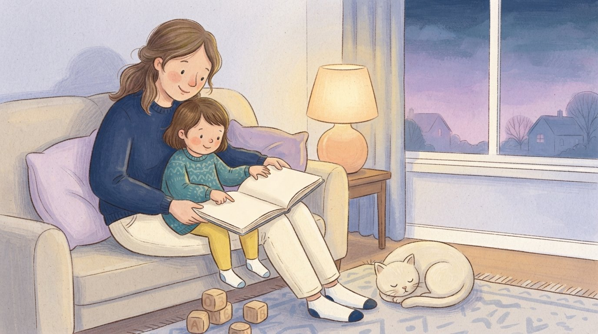

The Story Corner › Reading news
Early reading help works: what a new Canadian report means for parents

Reading has been in the Canadian headlines this week. Two reports from the Aristotle Foundation for Public Policy, released in mid-November, look at how many children struggle with reading by the end of the early primary years. News outlets including CP24, NOW Toronto and the National Post have covered the findings.
What the reports found
Depending on the province, between 20 and 56 per cent of students were reported as not reading at the expected level by Grade 4. In Ontario, CP24 reported that 38 per cent of students do not meet the provincial reading standard on their own by the end of Grade 3. The authors call for more structured, phonics-based teaching, a knowledge-rich curriculum and better teacher training.
Not everyone reads the numbers the same way. Provinces test at different grades and in different years, so the results are not directly comparable, and one reading expert quoted by CP24 noted that timed comprehension tests may miss some decoding difficulties. Recent Ontario results also show slight improvement since 2023.
The hopeful part: early help makes a difference
The most encouraging finding comes from a study led by University of Alberta researcher George Georgiou with about 1,000 Grade 2 students in five provinces. After five months of targeted reading support, around 80 per cent of the children made progress equal to roughly 18 months of typical growth, and about half no longer needed extra help. The message is clear: the earlier a child gets support, the easier it is to catch up.
What this means at home
Parents are not meant to replace teachers, but you are often the first to notice when reading feels hard. For children aged 3 to 8, a few simple habits help:
- Play with sounds and letters in everyday moments: rhymes, 'I spy something that starts with mmm', and spotting letters on signs.
- Let early readers sound out short, simple words while you read the harder parts of the book.
- Keep reading aloud every day, including non-fiction, to build the vocabulary and background knowledge that help understanding later.
- Watch for signs such as guessing words from pictures, avoiding reading, or not linking letters to sounds by the end of kindergarten.
- If something worries you, ask the teacher early. Ask how reading is checked in the first school years and what extra help is available. Waiting a year 'to see' can mean lost time.
Wherever you live, the lesson travels well: struggling early is common, it is not a child's fault, and the right support at the right time can change the story.
Tonight, pick three short words from your bedtime book, such as cat, sun or map, and ask your child to tap out each sound with a finger before blending them together.
Sources
- CP24: Think tank calls for change in teaching literacy in Canada
- NOW Toronto: 1 in 3 Ontario children are not reading at grade level by age nine, new study warns
- National Post (via Yahoo News Canada): 20 per cent of nine-year-olds aren't reading to expectations, and they aren't catching up as teenagers

A gentle ocean adventure retelling the story of Prophet Yunus and his heartfelt dua, followed by mazes, matching and counting games, and a certificate to celebrate your little reader.
Buy on Amazon